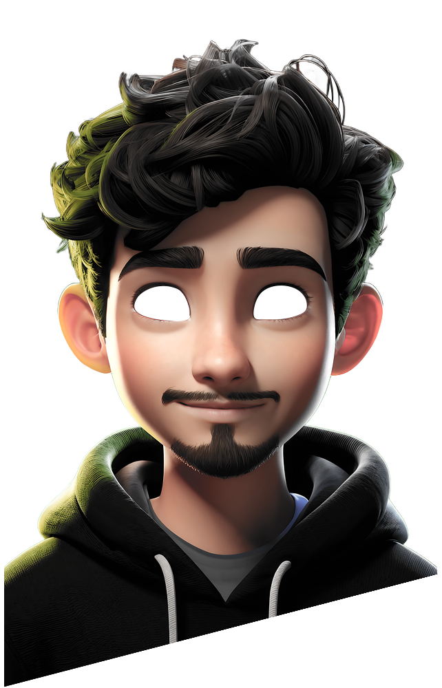
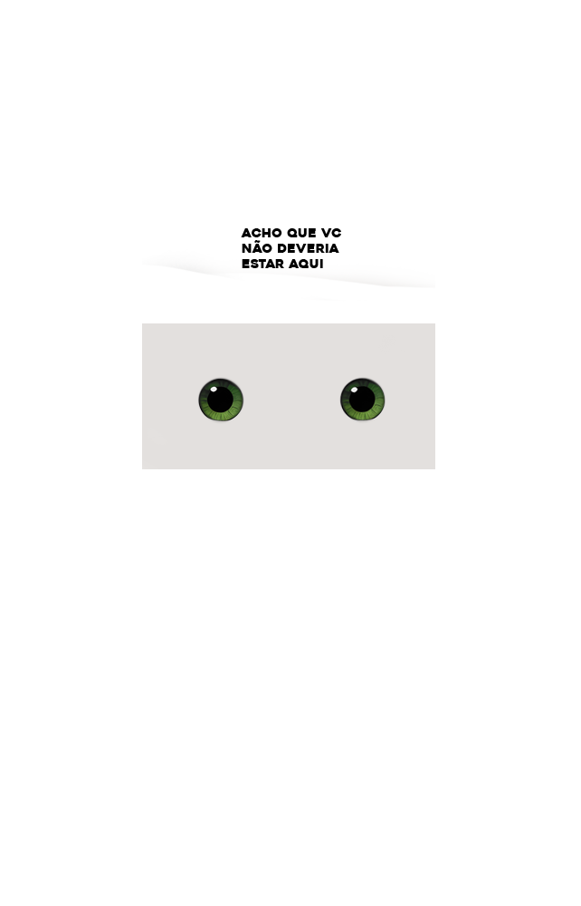

Desenvolvedor Front end UX/UI Designer Analista de BD
Localizado em São Paulo. 👨💻
Localizado em São Paulo. 👨💻
Recentemente, trabalhei em um projeto de desenvolvimento de sistema web focada na experiência do usuário, utilizando HTML, CSS e JavaScript, com prototipação no Figma. Além disso, minha experiência em PL/SQL foi crucial para assegurar a eficiência na gestão dos dados.
Tenho experiência em atualizar e importar tabelas de materiais SIMPRO e medicamentos BRASINDICE, além de corrigir erros no Portal das Cooperativas. Desenvolvo consultas e visualizações de banco de dados, importo consultas no Power BI e edito imagens para catálogos. Sou competente em análise de dados, administração do Microsoft Teams e 365, gerenciamento de ativos com GLPI/ZABBIX, e criação de Modelos Entidade-Relacionamento
Tenho experiência em suporte ao usuário para pacote Office, Windows, Gmail, Outlook, e diversos tipos de impressoras. Realizo suporte em redes, criação de usuários de domínio, instalação de Windows e programas, além de configuração de VPNs e impressoras. Conheço o sistema Siltwms e a configuração de equipamentos como coletores de dados e balanças. Sou responsável pelo controle de equipamentos de TI, incluindo a criação de planilhas e redução de custos.
Tenho experiência em suporte a filiais e atendimento por Service Desk, além de configuração de SAT Sweda, scanners e impressoras. Realizo manuseio e reparos de telefones, reparo técnico em máquinas, configuração dos sistemas CM5 e Procfit, instalação de banco de dados, e gestão de equipamentos com defeitos.
Sou formado em Redes de Computadores 👨🏻🎓, recentemente, tenho me especializado em front-end utilizando tecnologias consolidadas no mercado.🎓